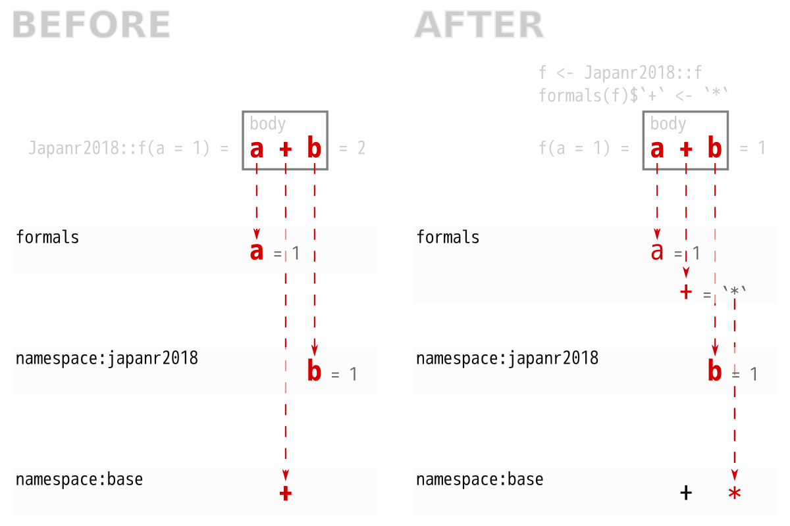
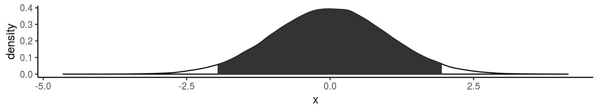

Japan.R 2018 LT
関数魔改造講座
(formals編)
atusy
2018-11-30
 atusy
atusy
 atusy
atusy- R歴5年
- 11月から Julia 始めました!
- 初Japan R
https://atusy.github.io/presentation/japanr2018/formals-for-black-magicians.html - Tokyo R 73で
ggplot2で図を並べる 話をした - (株) 蒜山地質年代学研究所
- 所在地は岡山市内
- 業務
- 地質試料の化学分析
- データ解析用Rパッケージ開発
blogdownで blogしてます- @Atsushi776 on Twitter


関数改造事始
改造は人の業


ラッパー関数を作る
名前空間に殴り込む
assignInNamespace()
- メリット
- 内部変数を弄ることも含め、何でもできる
formalsが対象なら便利なパッケージがある
(hoxo-m/fixer)
- デメリット
- オブジェクト間の依存関係による予期せぬ副作用
関数の構成要素を魔改造する
| 構成要素 | > identity | |
|---|---|---|
| formals | 引数のリスト | function (x) |
| body | 関数内のコード | x |
| environment | 関数を格納した変数の居場所 | <environment: namespace:base> |
formals() を弄って
assignInNamespace() せずに
内部変数も含めて挙動を弄ろう
package:japanr2018
インストール & 読み込み
中身
namespace:japanr2018 に隔離
f
# function(a) a + b
# <bytecode: 0x3e05f08>
# <environment: namespace:japanr2018>
f <- 1
f
# [1] 1
japanr2018::f
# function(a) a + b
# <bytecode: 0x3e3d700>
# <environment: namespace:japanr2018>japanr2018::f は上書きされない
既存の引数を弄る
formals() で関数の引数を確認する
ヘンなリストだけどリストのノリで弄れる。
弄るには`formals<-`
## $a
## [1] 1## [1] 2alist() を使うと遅延評価できる
## rnorm(1)## [1] 3.439521## [1] 0.649811?formals にも載ってるアブナい技
You can overwrite the formal arguments of a function (though this is advanced, dangerous coding).
f <- function(x) a + b
formals(f) <- alist(a = , b = 3)
f # function(a, b = 3) a + b
f(2) # result = 5
引数を追加する
確認
## function(a) a + b
## <bytecode: 0x4b4b6f8>
## <environment: namespace:japanr2018>## [1] 1b を a と同じ長さの乱数にしたい
## [1] 1.438568 2.591437 3.015478## [1] 1.994207 2.425113 3.596890 4.074767たし算じゃなくてかけ算がいい
## [1] 1
japanr2018::g は影響を受けない
## [1] 2assignInNamespace("b", 2, "japanr2018")
していたら
japanr2018::g(1) == 3
になっていた
応用1
ggplot2で密度分布の信頼区間を描写
ggproto で StatCI を定義
StatCI <- ggproto(
"StatCI",
ggplot2::StatDensity,
compute_group = function(data, self, ci = 0.95, bw, adjust, kernel, n, trim, ...) {
# calculate density based on StatDensity
res <- self$super()$compute_group(
data = data,
bw = bw,
adjust = adjust,
kernel =kernel,
n = n,
trim = trim,
...
)
# quantile intervals to trim res
Q <- quantile(data$x, 0.5 + ci / c(-2, 2))
L <- Q[1] <= res$x
U <- res$x <= Q[2]
# return trimmed res
rbind(
find_boundary(res, !L, Q[1]),
res[L & U, ],
find_boundary(res, U, Q[2])
)
}
)
find_boundary <- function(data, bool, lim) {
if(any(data$x == lim)) return(NULL)
neighbors <- data[sum(bool) + c(0, 1), ]
colSums(neighbors * rev(abs((lim - neighbors$x) / diff(neighbors$x))))
}ggplot2::stat_density() を
stat_ci() に改造
## function (mapping = NULL, data = NULL, geom = "area", position = "stack",
## ..., bw = "nrd0", adjust = 1, kernel = "gaussian", n = 512,
## trim = FALSE, na.rm = FALSE, show.legend = NA, inherit.aes = TRUE)
## {
## layer(data = data, mapping = mapping, stat = StatDensity,
## geom = geom, position = position, show.legend = show.legend,
## inherit.aes = inherit.aes, params = list(bw = bw, adjust = adjust,
## kernel = kernel, n = n, trim = trim, na.rm = na.rm,
## ...))
## }
## <bytecode: 0x5fe15d0>
## <environment: namespace:ggplot2>stat_density() が呼び出す StatDensity を、
ggplot2::StatDensity から、引数の StatDensity に摩り替え
library(ggplot2)
stat_ci <- stat_density
formals(stat_ci) <- c(
formals(stat_ci),
StatDensity = ggAtusy::StatCI
)
ggplot(data.frame(x = rnorm(1e5)), aes(x)) +
geom_density() + stat_ci()
Disclaimer
遊び半分の実装です。
実用的には ggdistribute や bayseplot があります。
応用2
skimr::inline_hist() の
ビン数を変更
内部変数 skimr:::optioins を弄る
## ▇▁▁▂▅▅▃▁myopt <- rlang::env_clone(skimr:::options)
inline_hist <- skimr::inline_hist
myopt$formats$character$width <- 20
formals(inline_hist)$options = myopt
inline_hist(iris$Petal.Length)## ▁▇▂▁▁▁▁▁▁▁▃▃▃▅▂▃▂▁▁▁動的に optioins を弄る
inline_hist <- skimr::inline_hist
.options <- function(n) {
options <- rlang::env_clone(skimr:::options)
options$formats$character$width <- n
options
}
formals(inline_hist)[c("n", "options")] <-
alist(n = 10, options = .options(n))
inline_hist(iris$Petal.Length)
# ▇▃▁▁▂▆▆▃▂▁
inline_hist(iris$Petal.Length, 20)
# ▁▇▂▁▁▁▁▁▁▁▃▃▃▅▂▃▂▁▁▁応用3
関数を手抜きして作る
S3メソッドを手抜きして作る
print.atusy <- function() {
cat("Printing atusy class object.\n")
NextMethod()
}
formals(print.atusy) <- formals(print)
structure(1, class = "atusy")## Printing atusy class object.
## [1] 1
## attr(,"class")
## [1] "atusy"S3メソッドは最低でも、
総称関数と同じ引数を持たなければならない
`formals<-`() を使えば総称関数の引数を丸々引き継げる